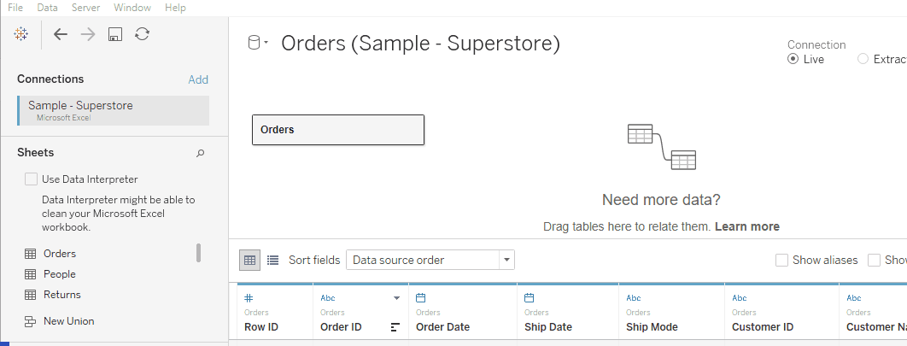
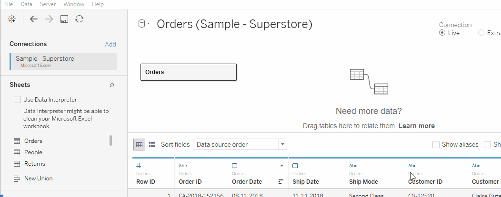

Здесь вы можете отредактировать подключение к файлу или серверу (например в том случае, если у них поменялось имя или логин/пароль для доступа)
В списке перечислены все таблицы, которые существуют в источнике. С помощью строки поиска таблицы можно искать по названию.
Когда вы создаете подключение, Tableau автоматически создает источник (по-английски Data Source) на основе которого вы в дальнейшем создаете свои визуализации и дашборды. Здесь мы можете добавить новые источники данных или поменять название у текущего.
Если в вашей модели несколько связей, то между ними появляется линия. Если нажать на неё правой кнопкой мыши, можно редактировать настройки связей, например по каким полям эта связь формируется.
Если вам нужно создать соединение (join), то нужно перейти в редактор соединений. Щелкните 2 раза на таблицу, с которой вы хотите сделать соединение. В появившемся интерфейсе вы можете добавить новые таблицы и установить тип соединения
В этом окне вы видите все таблицы и связи между ними. Если щелкнуть на таблицу правой кнопкой мыши, появится меню с дополнительными настройками.
Здесь вы можете настроить тип подключения - прямое подключение к источнику или создание экстракта (сохраненной версии данных)
Вы можете указать фильтры, которые будут применятся ко всем запросам в данном подключении
В этом разделе вы можете посмотреть, какие данные будут вам доступны после подключения всех таблиц и применения фильтров